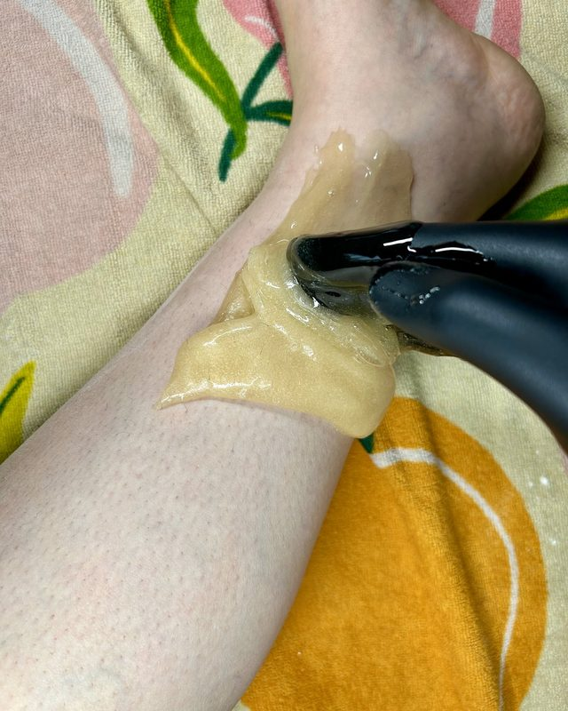

Why sugar?
Sugaring removes hair with a warm paste of sugar, lemon and water. Here's why people who try it tend to stick with it.

Easier on your skin
- Gentler than waxing
- The paste comes off in small sections, in the direction your hair grows, so it hurts less.
- Good for sensitive skin
- Sugar sticks only to hair and dead skin, not live skin, and it's applied at body temperature, so there's no risk of burns.
- Fewer ingrown hairs
- Sugaring clears away dead skin and pulls hair out the way it grows, so less hair breaks off and gets trapped.
- Very precise
- It removes hair as short as 1/16 of an inch, so you can come in sooner than you could for waxing.
Better over time
- Results that build
- Initial results last 3 to 4 weeks. With regular appointments, hair grows back slower, finer and softer, and over time it may stop growing back. Each visit gets easier.
- Put down the razor
- Shaving undoes the progress by letting hair grow back strong and thick from the root.
- Works almost anywhere
- Every part of the body can be sugared.
- Priced like waxing
- Sugaring takes more training, but costs about the same as waxing.
Good for you
- Simple, natural paste
- Just sugar, lemon and water. It's sanitary, biodegradable and wipes off with a damp cloth.
- Thousands of years of safe use
- Sugaring dates back to ancient Egypt.
- Gender affirming
- Removing hair can help your body match your authentic self, and boost your confidence.
- Feel at home in your body
- Smooth skin can add new sensations and new ways to appreciate your body.
- A self-care ritual
- Following your sugarist's before-and-after advice builds habits that feel good, and can lead to other healthy choices.